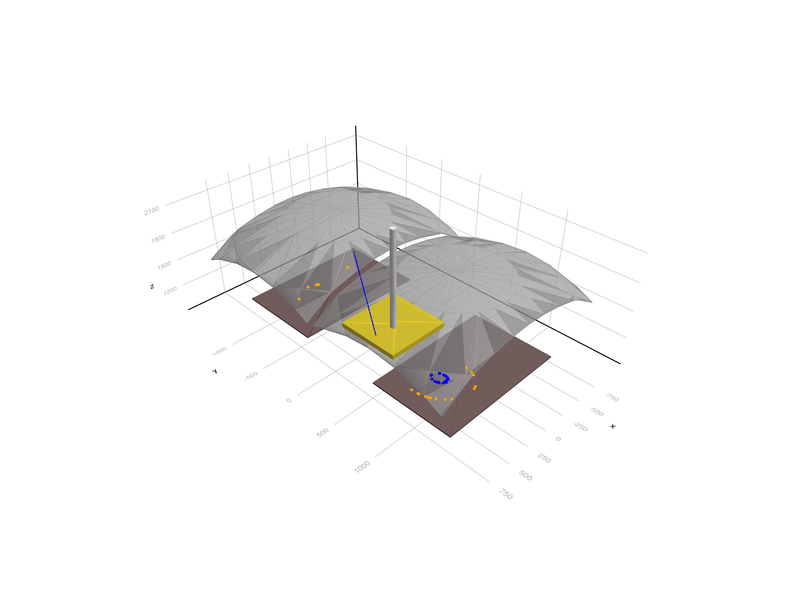
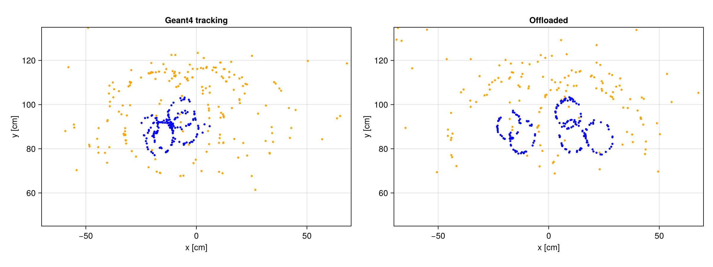
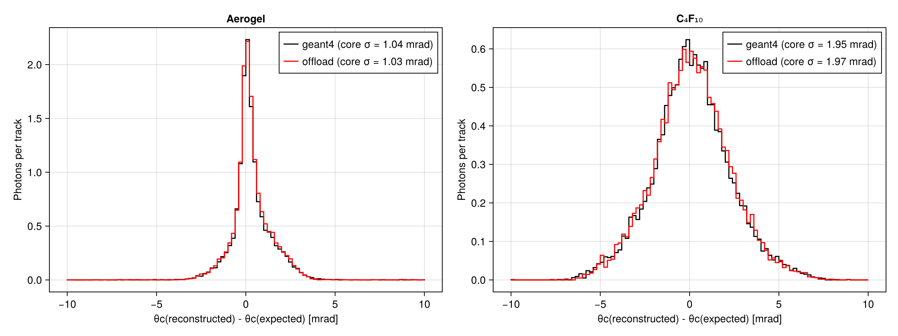

RICH Detector with Offloaded Optical Photons
This example is a variant of the RICH Detector example. Most of the CPU time of that simulation goes into the tracking of the optical photons by Geant4. Here the optical photons are not tracked by Geant4 at all. They are collected as soon as they are created, and killed. At the end of the event the whole collection is handed to an external propagator that transports the photons to the photodetectors. This is the idea behind the GPU offloading of optical photons in projects like Opticks or Celeritas.
In this example the external propagator is a simple ray tracer written in Julia (RICHTracer.jl). It knows the geometry of this detector and implements the same optical physics as Geant4 (absorption, Rayleigh scattering, Fresnel refraction and reflection, and the mirror reflectivity). It does not call Geant4, and the photons are independent of each other, so it could run on several threads or on a GPU.
The example shows:
- collecting the optical photons in the stacking action, and killing them with
fKill - processing the collection of photons at the end of the event with code outside Geant4, which returns the hits on the photodetectors
- comparing the hits and the reconstructed Cherenkov angles with the full Geant4 simulation (the same application can run in both modes)
You can also download this example as a Jupyter notebook and a plain Julia source file.
Table of contents
- Loading the necessary Julia modules
- Detector, physics and primary generator
- The external photon propagator
- Define the Simulation Data
- Reconstruction of the Cherenkov angle
- Define the User Actions
- Create the Application
- Configure and Initialize
- One event in detail
- Geant4 tracking versus offloading
- Hits on the photodetectors
- Single photon resolution
Loading the necessary Julia modules
using Geant4
using Geant4.SystemOfUnits
using Geant4.PhysicalConstants
using FHist, GeometryBasics, Printf
using LinearAlgebra: dot, normalize ## Geant4 also exports `dot`
using CairoMakie
Detector, physics and primary generator
The detector, the physics list and the primary generator are the same as in the RICH Detector example. The detector is defined in RICHDetector.jl.
include(joinpath(@__DIR__, "RICHDetector.jl"))
rich = RICHDetector()
struct RICHPhysics <: G4VUserPhysicsList
function RICHPhysics(verbose)
pl = FTFP_BERT(verbose)
RegisterPhysics(pl, move!(G4OpticalPhysics(verbose)))
return pl
end
end
mutable struct RICHGunData <: G4JLGeneratorData
gun::Union{Nothing, CxxPtr{G4ParticleGun}}
particles::Vector{String}
pmin::Float64
pmax::Float64
θmin::Float64
θmax::Float64
##---the current track
particle::String
mass::Float64
momentum::Float64
direction::Vec3{Float64}
end
function RICHGunGenerator(; particles=["pi+", "kaon+", "proton"], pmin=1GeV, pmax=80GeV, θmin=50mrad, θmax=250mrad)
data = RICHGunData(nothing, particles, pmin, pmax, θmin, θmax, "", 0., 0., Vec3(0.,0.,1.))
function init(data::RICHGunData, ::Any)
data.gun = move!(G4ParticleGun())
SetParticlePosition(data.gun, G4ThreeVector(0, 0, 0))
end
function generate(evt::G4Event, data::RICHGunData)::Nothing
gun = data.gun
data.particle = rand(data.particles)
SetParticleByName(gun, data.particle)
data.mass = gun |> GetParticleDefinition |> GetPDGMass
data.momentum = data.pmin * (data.pmax/data.pmin)^rand()
cosθ = cos(data.θmin) - rand() * (cos(data.θmin) - cos(data.θmax)) ## uniform in solid angle
sinθ, ϕ = sqrt(1 - cosθ^2), 2π * rand()
data.direction = Vec3(sinθ * cos(ϕ), sinθ * sin(ϕ), cosθ)
SetParticleEnergy(gun, sqrt(data.momentum^2 + data.mass^2) - data.mass) ## kinetic energy
SetParticleMomentumDirection(gun, G4ThreeVector(data.direction...))
GeneratePrimaryVertex(gun, CxxPtr(evt))
end
G4JLPrimaryGenerator("RICHGun", data; init_method=init, generate_method=generate)
end
generator = RICHGunGenerator()Geant4.G4JLPrimaryGenerator{Main.var"##142".RICHGunData}("RICHGun", Main.var"##142".RICHGunData(nothing, ["pi+", "kaon+", "proton"], 1000.0, 80000.0, 0.05, 0.25, "", 0.0, 0.0, [0.0, 0.0, 1.0]), Main.var"##142".var"#init#10"(), Main.var"##142".var"#generate#11"(), Geant4.G4JLGeneratorAction[])The external photon propagator
The ray tracer is defined in the RICHTracer.jl file. It defines the OpticalPhoton structure with the state of a photon at its creation (position, direction, polarization, energy, time, and whether it was produced by the primary track), and the function propagate(tracer, photon), which returns the position of the photon on a photodetector, or nothing if the photon is lost. The RICHTracer structure holds the constants of the geometry, computed from the parameters of the detector.
include(joinpath(@__DIR__, "RICHTracer.jl"))
tracer = RICHTracer(rich)Main.var"##142".RICHTracer([-1000.0, -1500.0, 1000.0], [1000.0, 1500.0, 2100.0], [-350.0, -350.0, 1000.0], [350.0, 350.0, 1050.0], 32.0, 1.03, 1000.0, 100000.0, 31.0, 2000.0, 0.9, ([0.0, 750.0, 10.0], [0.0, -750.0, 10.0]), ([-999.0, 36.0, 1550.0], [-999.0, -1499.0, 1550.0]), ([999.0, 1499.0, 2099.0], [999.0, -36.0, 2099.0]), ([-700.0, 450.0, 1000.0], [-700.0, -1350.0, 1000.0]), ([700.0, 1350.0, 1010.0], [700.0, -450.0, 1010.0]), 1051.0)Define the Simulation Data
The Hit, Photon and Track structures are the same as in the RICH example. The simulation data has two new fields: offload, which selects the mode of the simulation, and optphotons, the optical photons collected during the event. We also count the photons and measure the time spent in the propagator.
struct Hit
position::Point3{Float64}
energy::Float64
radiator::Symbol ## :aerogel or :gas
primary::Bool ## produced by the primary track
end
struct Photon
event::Int
θc::Float64 ## reconstructed Cherenkov angle
radiator::Symbol
primary::Bool
end
struct Track
particle::String
mass::Float64
momentum::Float64
direction::Vec3{Float64}
end
mutable struct RICHSimData <: G4JLSimulationData
##---Configuration------------------------------------------------------------------------------
offload::Bool ## offload the optical photons (or track them in Geant4)
tracer::RICHTracer ## the external propagator
opticalphoton::CxxPtr{G4ParticleDefinition}
##---Event data---------------------------------------------------------------------------------
optphotons::Vector{OpticalPhoton} ## photons collected by the stacking action
hits::Vector{Hit}
##---Run data-----------------------------------------------------------------------------------
tracks::Vector{Track}
photons::Vector{Photon}
eventHits::Vector{Vector{Hit}} ## hits of the first events, for the displays
nOptPhotons::Int ## number of photons offloaded
offloadTime::Float64 ## time spent in the propagator
RICHSimData(tracer; offload=true) = new(offload, tracer, CxxPtr{G4ParticleDefinition}(C_NULL),
OpticalPhoton[], Hit[], Track[], Photon[], [], 0, 0.)
endReconstruction of the Cherenkov angle
The reconstruction is the same as in the RICH example: for each hit we find the reflection point on the mirror, assuming that the photon was emitted in the middle of the radiator, and compute the angle between the photon and the track.
function reflectionPoint(E, D, C, R)
a, b = E - C, D - C
â = normalize(a)
ĉ = normalize(b - dot(b, â) * â)
mirrorpoint(φ) = C + R * (cos(φ) * â + sin(φ) * ĉ)
function g(φ) ## difference of the cosines of the two angles
M = mirrorpoint(φ)
m = normalize(M - C)
dot(normalize(E - M), m) - dot(normalize(D - M), m)
end
lo, hi = 0., atan(dot(b, ĉ), dot(b, â))
for _ in 1:40
mid = (lo + hi) / 2
g(mid) < 0 ? (lo = mid) : (hi = mid)
end
return mirrorpoint((lo + hi) / 2)
end
function sphereIntersection(t, C, R)
b = dot(t, C)
return b + sqrt(b^2 - dot(C, C) + R^2)
end
const nGas = c4f10RIndex(3.2eV)
function cherenkovAngle(det::RICHDetector, track::Track, hit::Hit)
t = track.direction
side = hit.position[2] > 0 ? 1 : -1
C = Point3{Float64}(mirrorCentre(det, side)...)
zAerogel = det.aerogelZ + det.aerogelThickness
if hit.radiator == :aerogel
s = (det.aerogelZ + det.aerogelThickness/2) / t[3]
else
s = (zAerogel / t[3] + sphereIntersection(t, C, det.mirrorRadius)) / 2
end
E = Point3{Float64}(s * t)
M = reflectionPoint(E, hit.position, C, det.mirrorRadius)
d = normalize(M - E)
if hit.radiator == :aerogel
dt = Vec3(d[1], d[2], 0.) * nGas / det.aerogelRIndex
d = Vec3(dt[1], dt[2], sqrt(1 - dot(dt, dt)))
end
return acos(clamp(dot(d, t), -1., 1.))
end
function expectedAngle(n, m, p)
β = p / sqrt(p^2 + m^2)
nβ = n * β
return nβ > 1 ? acos(1/nβ) : NaN
endexpectedAngle (generic function with 1 method)Define the User Actions
- stackaction is called by Geant4 for every new track, before it is pushed into the stack. In offload mode, an optical photon is copied into the
optphotonsvector and the action returnsfKill, so Geant4 deletes the track without tracking it. All other tracks are classified asfUrgent, the default. - stepaction is only needed when the photons are tracked by Geant4. It records the photons that enter a photodetector, as in the RICH example.
- endevent offloads the photons of the event: each photon is propagated by the tracer, and the photons that reach a photodetector are detected with a probability equal to the quantum efficiency. The resulting hits are then reconstructed in the same way in both modes.
function beginrun(run::G4Run, app::G4JLApplication)::Nothing
data = getSIMdata(app)
data.opticalphoton = FindParticle("opticalphoton")
empty!(data.tracks)
empty!(data.photons)
empty!(data.eventHits)
data.nOptPhotons, data.offloadTime = 0, 0.
return
end
function beginevent(evt::G4Event, app::G4JLApplication)::Nothing
data = getSIMdata(app)
empty!(data.hits)
empty!(data.optphotons)
return
end
toVec3(v) = Vec3{Float64}(x(v), y(v), z(v))
function stackaction(track::G4Track, app::G4JLApplication)::G4ClassificationOfNewTrack
data = getSIMdata(app)
(data.offload && GetParticleDefinition(track) == data.opticalphoton) || return fUrgent
push!(data.optphotons, OpticalPhoton(toVec3(GetPosition(track)[]), toVec3(GetMomentumDirection(track)[]),
toVec3(GetPolarization(track)[]), GetTotalEnergy(track),
GetGlobalTime(track), GetParentID(track) == 1))
return fKill
end
radiatorOf(det, zvertex) = zvertex < det.aerogelZ + det.aerogelThickness + 1mm ? :aerogel : :gas
function stepaction(step::G4Step, app::G4JLApplication)::Nothing
data = getSIMdata(app)
data.offload && return
track = GetTrack(step)
GetParticleDefinition(track) == data.opticalphoton || return
post = GetPostStepPoint(step)
GetStepStatus(post) == fGeomBoundary || return
pv = GetPhysicalVolume(post)
(pv == C_NULL || !startswith(String(GetName(pv)), "Photodetector")) && return
SetTrackStatus(track, fStopAndKill)
energy = GetTotalEnergy(track)
rand() < quantumEfficiency(energy) || return
p = GetPosition(post)[]
radiator = radiatorOf(app.detector, z(GetVertexPosition(track)[]))
push!(data.hits, Hit(Point3{Float64}(x(p), y(p), z(p)), energy, radiator, GetParentID(track) == 1))
return
endstepaction (generic function with 1 method)The function that processes the photons of an event outside Geant4. It only uses the collected photons and the tracer, and fills a vector of hits.
function offload!(hits::Vector{Hit}, photons::Vector{OpticalPhoton}, tracer::RICHTracer, det::RICHDetector)
for photon in photons
p = propagate(tracer, photon)
isnothing(p) && continue
rand() < quantumEfficiency(photon.energy) || continue
push!(hits, Hit(Point3{Float64}(p...), photon.energy, radiatorOf(det, photon.position[3]), photon.primary))
end
return hits
end
function endevent(evt::G4Event, app::G4JLApplication)::Nothing
data = getSIMdata(app)
if data.offload
data.nOptPhotons += length(data.optphotons)
data.offloadTime += @elapsed offload!(data.hits, data.optphotons, data.tracer, app.detector)
end
gen = app.generator.data
track = Track(gen.particle, gen.mass, gen.momentum, gen.direction)
push!(data.tracks, track)
ievt = length(data.tracks)
for hit in data.hits
push!(data.photons, Photon(ievt, cherenkovAngle(app.detector, track, hit), hit.radiator, hit.primary))
end
length(data.eventHits) < 100 && push!(data.eventHits, copy(data.hits))
return
endendevent (generic function with 1 method)Create the Application
app = G4JLApplication(; detector = rich, ## detector with parameters
simdata = RICHSimData(tracer), ## simulation data structure
generator = generator, ## primary particle generator
nthreads = 0, ## # of threads (0 = no MT)
physics_type = RICHPhysics, ## what physics list to instantiate
stackaction_method = stackaction, ## stacking action
stepaction_method = stepaction, ## step action method
begineventaction_method = beginevent, ## begin-event action
endeventaction_method = endevent, ## end-event action
beginrunaction_method = beginrun ## begin run action
);
**************************************************************
Geant4 version Name: geant4-11-04-patch-01 [MT] (13-March-2026)
Copyright : Geant4 Collaboration
References : NIM A 506 (2003), 250-303
: IEEE-TNS 53 (2006), 270-278
: NIM A 835 (2016), 186-225
WWW : http://geant4.org/
**************************************************************
Configure and Initialize
configure(app)
initialize(app)### Birks coefficients used in run time
One event in detail
We simulate one event with a 10 GeV/c pion in offload mode and look at the collected photons. We draw the geometry, the creation points of the photons, and the hits produced by the tracer (aerogel photons in orange, gas photons in blue).
data = getSIMdata(app)
generator.data.particles, generator.data.pmin, generator.data.pmax = ["pi+"], 10GeV, 10GeV
beamOn(app, 1)
optphotons, hits = copy(data.optphotons), copy(data.hits)
@printf "Photons collected: %d (%d in the aerogel), hits: %d\n" length(optphotons) count(p -> radiatorOf(rich, p.position[3]) == :aerogel, optphotons) length(hits)
fig = Figure(size=(1200, 900))
s = LScene(fig[1,1])
Geant4.draw!(s, GetWorldVolume())
scatter!(s, [Point3{Float64}(p.position) for p in optphotons], markersize=2,
color=[radiatorOf(rich, p.position[3]) == :aerogel ? :orange : :blue for p in optphotons])
scatter!(s, [h.position for h in hits], markersize=6, color=[h.radiator == :aerogel ? :orange : :blue for h in hits])
Geant4 tracking versus offloading
We simulate 1000 events with pions, kaons and protons, first with the photons tracked by Geant4 and then with the photons offloaded to the tracer. We keep the results of each run.
generator.data.particles, generator.data.pmin, generator.data.pmax = ["pi+", "kaon+", "proton"], 1GeV, 80GeV
results = Dict{Symbol, Any}()
for mode in (:geant4, :offload)
data.offload = mode == :offload
t = @elapsed beamOn(app, 1000)
results[mode] = (tracks = copy(data.tracks), photons = copy(data.photons), eventHits = copy(data.eventHits), time = t)
@printf "%-8s: %6.1f s for %d events, %d hits" mode t length(data.tracks) length(data.photons)
mode == :offload && @printf " (%d photons offloaded, %.1f s in the tracer)" data.nOptPhotons data.offloadTime
println()
endgeant4 : 2.4 s for 1000 events, 32630 hits
offload : 0.7 s for 1000 events, 33321 hits (403395 photons offloaded, 0.2 s in the tracer)
The number of detected photons of the primary track per track above the Cherenkov threshold, for each radiator, should agree within the statistical fluctuations.
for mode in (:geant4, :offload), rad in (:aerogel, :gas)
(; tracks, photons) = results[mode]
sel = count(p -> p.radiator == rad && p.primary, photons)
nfired = count(t -> expectedAngle(rad == :aerogel ? rich.aerogelRIndex : nGas, t.mass, t.momentum) > 0, tracks)
@printf "%-8s %-8s: %6.1f detected photons per track above threshold\n" mode rad sel/max(nfired, 1)
endgeant4 aerogel : 20.3 detected photons per track above threshold
geant4 gas : 26.7 detected photons per track above threshold
offload aerogel : 21.0 detected photons per track above threshold
offload gas : 26.0 detected photons per track above threshold
Hits on the photodetectors
The hits of the first 20 events on the top photodetector plane, with Geant4 tracking (left) and offloading (right).
fig = Figure(size=(1200, 450))
for (i, mode) in enumerate((:geant4, :offload))
ax = Axis(fig[1,i], title = mode == :geant4 ? "Geant4 tracking" : "Offloaded", xlabel="x [cm]", ylabel="y [cm]", aspect=DataAspect())
xlims!(ax, -rich.detectorHalfX/cm, rich.detectorHalfX/cm)
ylims!(ax, rich.detectorY ./ cm |> extrema)
for hits in results[mode].eventHits[1:20]
h = [hit for hit in hits if hit.position[2] > 0]
isempty(h) && continue
scatter!(ax, [p.position[1]/cm for p in h], [p.position[2]/cm for p in h], markersize=5,
color=[p.radiator == :aerogel ? :orange : :blue for p in h])
end
end
Single photon resolution
The difference between the reconstructed and the expected Cherenkov angle of each photon of the primary track, for both modes. The distributions are normalized to the number of tracks.
fig = Figure(size=(1200, 450))
for (i, (rad, n)) in enumerate(((:aerogel, rich.aerogelRIndex), (:gas, nGas)))
ax = Axis(fig[1,i], title = rad == :aerogel ? "Aerogel" : "C₄F₁₀",
xlabel="θc(reconstructed) - θc(expected) [mrad]", ylabel="Photons per track")
for (mode, color) in ((:geant4, :black), (:offload, :red))
(; tracks, photons) = results[mode]
Δθ = Float64[]
for p in photons
(p.radiator == rad && p.primary) || continue
t = tracks[p.event]
θ = expectedAngle(n, t.mass, t.momentum)
isnan(θ) || push!(Δθ, (p.θc - θ)/mrad)
end
core = filter(x -> abs(x) < 5, Δθ)
μ = sum(core)/length(core)
σ = sqrt(sum(abs2, core .- μ)/length(core))
h = Hist1D(Δθ; binedges=range(-10, 10, length=101)) * (1/length(tracks))
stephist!(ax, h, color=color, label=@sprintf("%s (core σ = %.2f mrad)", mode, σ))
end
axislegend(ax, position=:rt)
end
This page was generated using Literate.jl.